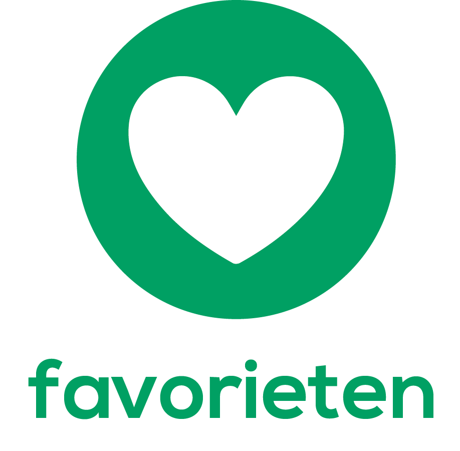
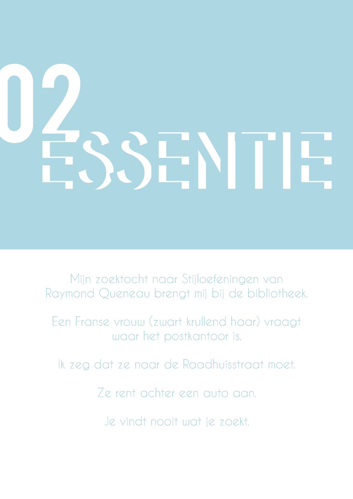

1
1
Verhalen website transavia
Zoeken
Filteren en Sorteren
Kies u genre:
Romans (18)
Detective (15)
Thrillers (12)
Humor (17)
Fantasy (21)
Klassieker (13)
Sorteren op:
Populariteit
Datum
Meeste downloads
Meeste reacties
Leestijd
Toon zoekresultaten
Lees verder
Eric Lucassen
Heroisch
Regenboog
Aanbevolen verhalen
86. Boers
6. Hardboiled
85. Presentator die ten onrechte denkt aansluiting te hebben gevonden bij 'de kids'

2. Essentie
3. Droom
39. Poepen
Dit verhaal is toegevoegd aan je favorieten.
Het downloaden van dit verhaal is voltooid.